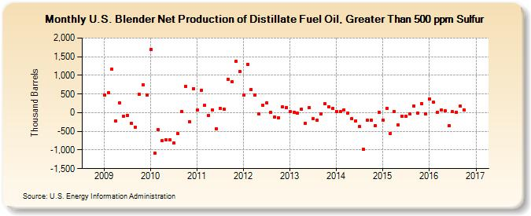

|
Download Data (XLS File) |
|
||||||||
|  | ||||||||
| U.S. Blender Net Production of Distillate Fuel Oil, Greater Than 500 ppm Sulfur (Thousand Barrels) | ||||||||
| Year | Jan | Feb | Mar | Apr | May | Jun | Jul | Aug | Sep | Oct | Nov | Dec |
|---|---|---|---|---|---|---|---|---|---|---|---|---|
| 2009 | 467 | 543 | 1,161 | -214 | 266 | -88 | -65 | -284 | -382 | 498 | 739 | 468 |
| 2010 | 1,702 | -1,077 | -463 | -756 | -723 | -730 | -812 | -566 | 37 | 706 | -251 | 647 |
| 2011 | 66 | 604 | 189 | -69 | 69 | -429 | 124 | 86 | 900 | 826 | 1,375 | 1,098 |
| 2012 | 466 | 1,294 | 623 | 465 | -29 | 205 | 271 | 12 | -125 | -129 | 149 | 139 |
| 2013 | 25 | 13 | -17 | 101 | -290 | 132 | -168 | -200 | -43 | 241 | 152 | 113 |
| 2014 | 36 | 25 | 81 | -10 | -158 | -220 | -380 | -985 | -202 | -201 | -349 | 9 |
| 2015 | -191 | 120 | -554 | 26 | -328 | -105 | -106 | -43 | 180 | -14 | 248 | -28 |
| 2016 | 369 | 279 | 8 | 69 | 46 | -351 | 23 | 18 | 181 | 68 | 222 | |
| - = No Data Reported; -- = Not Applicable; NA = Not Available; W = Withheld to avoid disclosure of individual company data. |
| Release Date: 1/31/2017 |
| Next Release Date: 2/28/2017 |